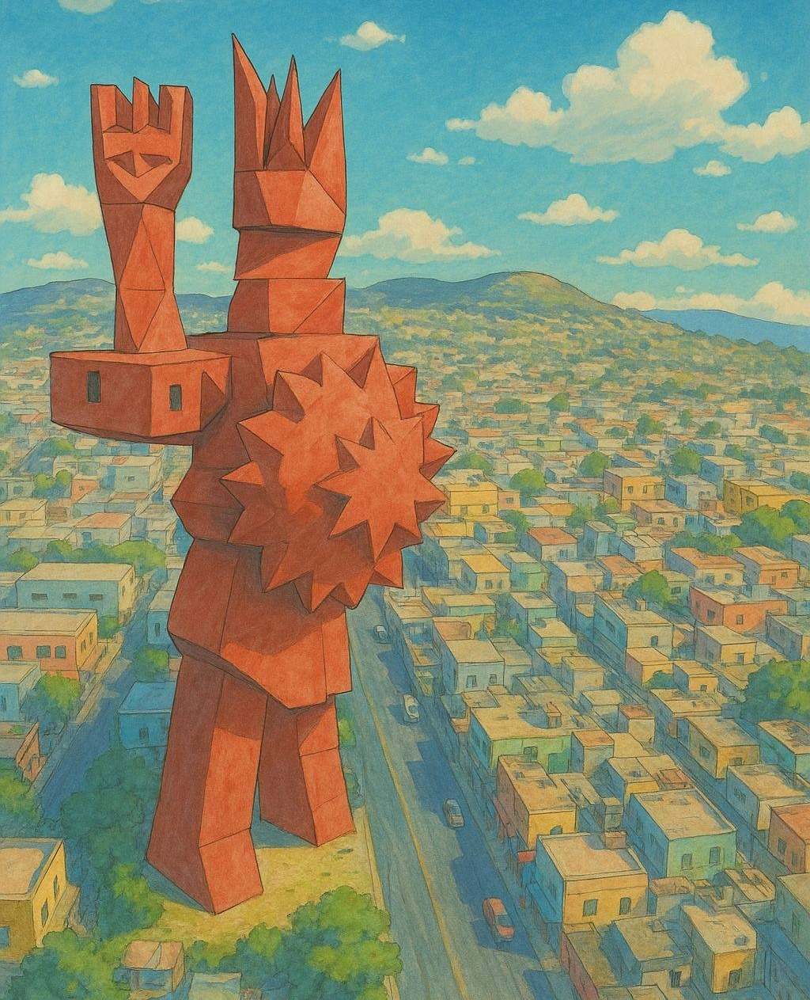
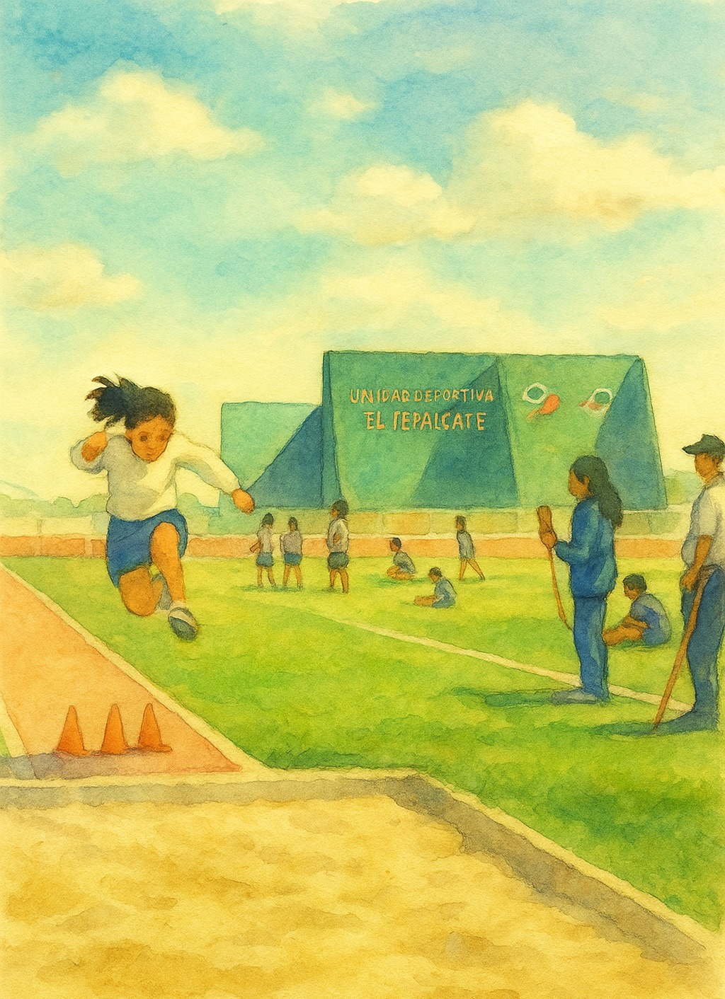

La zona arqueológica Los Pochotes, ubicada en el Barrio de San Andrés en Chimalhuacán, Estado de México, es un sitio de gran relevancia histórica y cultural que resguarda vestigios de distintas épocas de ocupación humana en la región.


La zona arqueológica Los Pochotes, ubicada en el Barrio de San Andrés en Chimalhuacán, Estado de México, es un sitio de gran relevancia histórica y cultural que resguarda vestigios de distintas épocas de ocupación humana en la región.
En Los Pochotes se encuentran restos de un palacio prehispánico conocido como el Técpan de Chimalhuacán, considerado uno de los mejor conservados del Altiplano Central. Su arquitectura muestra influencias de las culturas teotihuacana, tolteca y acolhua.
En 1984 se descubrió el esqueleto del "Hombre de Chimalhuacán", con una antigüedad estimada de 12,000 años, lo que convierte a esta zona en una de las cunas del hombre mesoamericano. También se han encontrado restos de fauna del Pleistoceno, como colmillos de mamut y huesos de bisonte, los cuales son exhibidos en el museo.
Los Pochotes fue un centro urbano importante durante el periodo Clásico y Posclásico. La zona ha proporcionado información valiosa sobre la vida cotidiana, religión y organización social de sus habitantes. Se han encontrado numerosos artefactos, incluyendo cerámica, herramientas de piedra y objetos decorativos, que reflejan la rica cultura de la región.
La zona arqueológica de Los Pochotes no solo es rica en historia, sino también en biodiversidad. La región alberga diversas especies de flora y fauna, muchas de las cuales son endémicas. Entre las plantas destacan los nopales y magueyes, mientras que la fauna incluye aves como el cenzontle y mamíferos pequeños.
Con el trabajo arqueológico realizado durante las décadas de los 40's y 90's del siglo pasado se han reconocido tres momentos de ocupación: Preclásico (400-100 a. C.), Clásico (200-450 d. C.) y Posclásico (800-1000 d. C. y 1100-1521 d. C.).

Los Pochotes es un importante sitio arqueológico ubicado en el municipio de Chimalhuacán, Estado de México, en la zona metropolitana de la Ciudad de México.

El sitio presenta restos significativos de arquitectura del Posclásico Tardío (1200-1521 d.C.), incluyendo un tecpan (palacio), una estructura poco común en el Valle de México. Sin embargo, la evidencia sugiere una ocupación del área desde el Preclásico.

Los Pochotes es considerado un posible lugar de origen de la civilización mesoamericana debido al descubrimiento del "Hombre de Chimalhuacán", cuyos restos datan de aproximadamente 12,000 años. Otros hallazgos importantes incluyen un colmillo de mamut y diversos artefactos como esculturas y molcajetes


Los Pochotes
Capilla del Santo Entierro
Guerrero Chimalli
Parque Ecoturístico el Chimalhuache

Plaza Vidrieros
Plaza Zaragoza

El Tepalcate
Canto del cincel
Museo del chimaltonalli